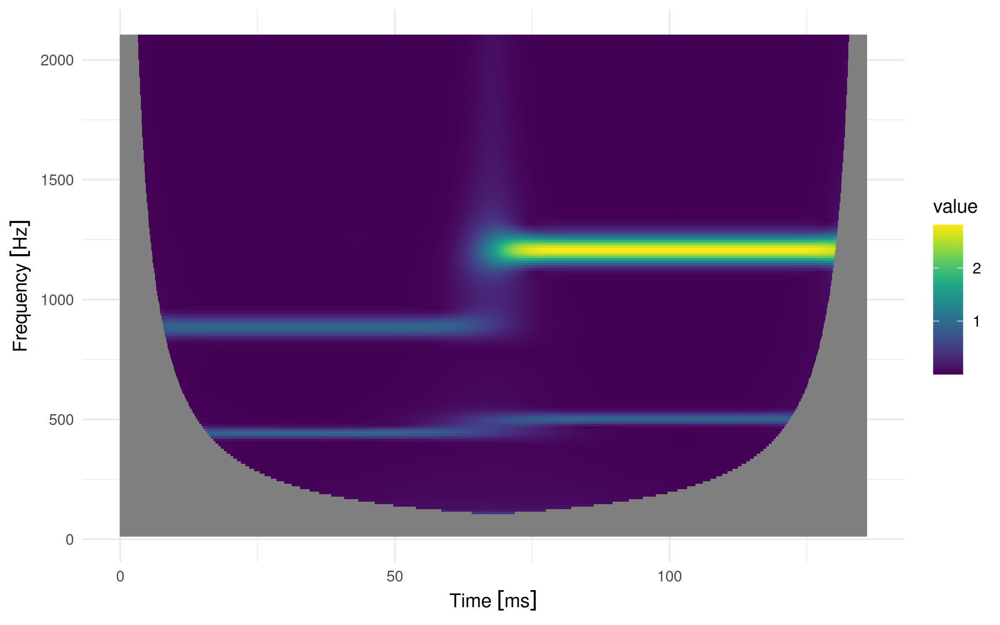
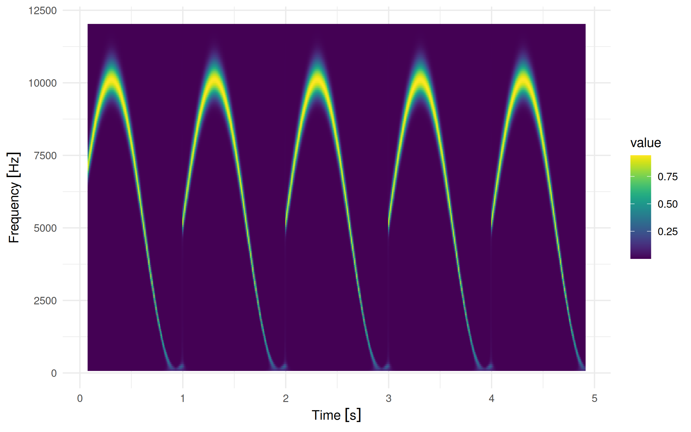

The R package fCWTr wraps the fCWT library, a library implementing a continuous wavelet transform with a Morlet wavelet, utilizing the power of fftw, a fast fourier transform implementation. It provides an R-like functional interface and implements common S3 methods for convenience.
See the original paper by Arts, L.P.A., van den Broek, E.L. The fast continuous wavelet transformation (fCWT) for real-time, high-quality, noise-resistant time–frequency analysis. Nat Comput Sci 2, 47–58 (2022). https://doi.org/10.1038/s43588-021-00183-z
System dependencies
- R >= 4.1
- fftw library (used by fCWT)
- Optional: a CPU/compiler supporting the AVX instruction set
- Optional: OpenMP
- On Windows, OpenMP support is disabled since rtools decided to compile fftw without OpenMP support.
- On Linux and MacOS the build scripts should automatically detect whether OpenMP support is available.
By default, most compiler setups do not make use of AVX to increase portability of the binary. If you are an R user that has a CPU supporting AVX and want to make use of it, you might need to manually enable compiler flags to let R know about it, and install the package from source (so that it gets compiled on your machine). One way to enable the flags is to create a file ~/.R/Makevars with the following content:
Installation
You can install the latest CRAN release of fCWTr with:
install.packages("fCWTr")Alternatively, you can install the development version of fCWTr like so (requiring installed devtools package):
devtools::install_github("lschneiderbauer/fCWTr")Example
This is a basic example that invokes the fCWT library to calculate the continuous wavelet transform and plot the result.
library(fCWTr)
# A signal encoded in a numeric vector.
# In this example we use some superimposed sin signals.
signal <- ts_sin_superpos
output <-
fcwt(
signal,
sample_freq = u(44.1, "kHz"),
freq_begin = u(16, "Hz"),
freq_end = u(2100, "Hz"),
n_freqs = 200,
sigma = 5
)
# The result is basically a numeric matrix with time and frequency dimension
dim(output)
#> [1] 6000 200
# Some meta data is recorded too
output
#> _Scalogram_
#> <> (Time/Frequency) dimension: [6000,200]
#> <> Sampling rate: 44.1 [kHz]
#> <> Frequency scale: 16 [Hz] - 2100 [Hz], linear
#> <> Time offset: 0 [s]
#> <> Sigma: 5
#> Time/frequency matrix summary
#> Min. 1st Qu. Median Mean 3rd Qu. Max. NA's
#> 0.00 0.00 0.00 0.13 0.04 2.81 232338The result can be converted into a data frame if need be:
head(as.data.frame(output), 10)
#> time_index time freq value
#> 1 0 0.000000e+00 [s] 2100 [Hz] NA
#> 2 1 2.267574e-05 [s] 2100 [Hz] NA
#> 3 2 4.535147e-05 [s] 2100 [Hz] NA
#> 4 3 6.802721e-05 [s] 2100 [Hz] NA
#> 5 4 9.070295e-05 [s] 2100 [Hz] NA
#> 6 5 1.133787e-04 [s] 2100 [Hz] NA
#> 7 6 1.360544e-04 [s] 2100 [Hz] NA
#> 8 7 1.587302e-04 [s] 2100 [Hz] NA
#> 9 8 1.814059e-04 [s] 2100 [Hz] NA
#> 10 9 2.040816e-04 [s] 2100 [Hz] NAWe can also directly plot the resulting scalogram:
plot(output, time_unit = "ms")
For long sequences, the required memory can exceed your available local memory. In this case it can be useful to reduce the time resolution of the result and process the data in batches. This can be done with fcwt_batch(). In case the batch size is not explicitly provided, some heuristics are used to determine a batch size automatically:
batch_result <-
fcwt_batch(
rep(ts_sin_sin, 5),
sample_freq = u(44.1, "kHz"),
freq_begin = u(100, "Hz"),
freq_end = u(12, "kHz"),
n_freqs = 200,
sigma = 4,
time_resolution = u(10, "ms")
)
plot(batch_result)